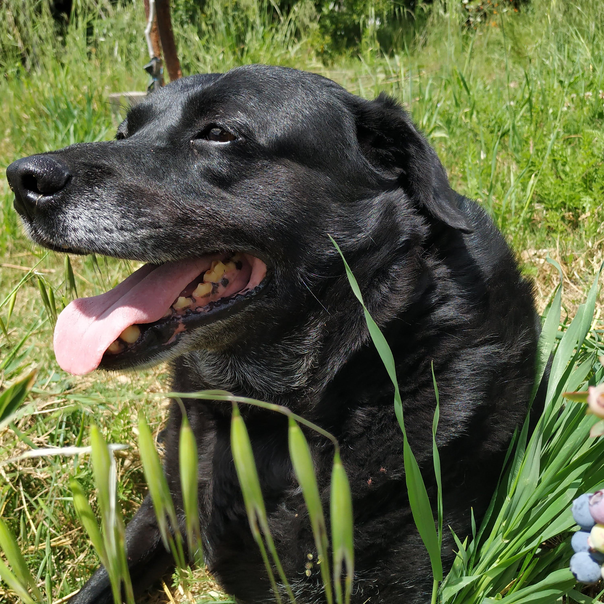
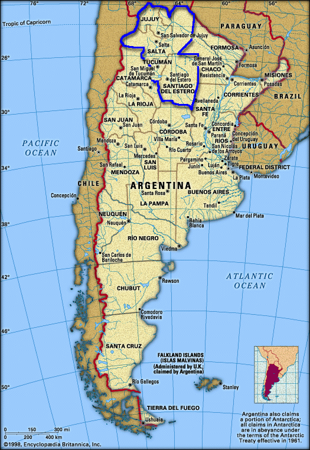

Hey everyone, by now you already know my name ☺. I'm 33 years old and happily married with my soulmate.
I live in Uruguay, in a peaceful neighborhood ironically called "La Paz"
The house wasn't empty when we bought it, but my wife and I decided to include the previous owners in our family and we all have been blessed since then.
Here are some pics of the previous owners posing for the camera:

Regarding my church membership, my parents were baptized when I was 5, and I've been a member since that time. I served my mission in Salta, Argentina back in 2008/10.

I love to understand how things work behind the scenes. Since I was a kid I used to dismantle every device I could put my hands on and tried to understand how all the parts worked together.
With programming the feeling is similar, you get to understand how and why the magic happens.